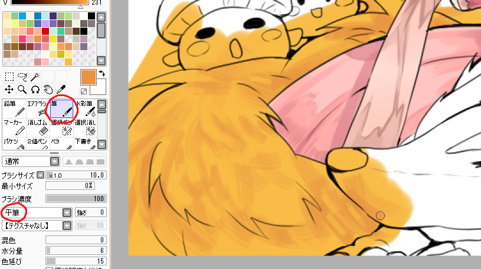

SAiデジタルメイキング！（ログレス）4
4.もふもふ系
目次
・ラフ、下書き
・肌、髪
・目、服
・もふもふ系←今ここ
・他モンスター、背景
もっふもふ！！プリシラちゃんとホットドッグ（良いネーミング）を塗っていきます！！
プリシラちゃんを一瞬で完成させちゃいます。
色塗り手法はルルハちゃんと同じなので、がっつり省略しますね。
これを・・・
こうして・・・
こうじゃ！！（説明放棄の姿勢）
※おおまかな使用色。
◇髪
髪の毛ベース(R248,G188,B70),髪影(R233,G151,B67),さらに濃い影(R176,G121,B37)
◇耳（？）
ベースは黄色(R252,G210,B108),光は白(R255,G255,B255)を水彩筆で。
◇目
ベース(R206,G211,B151),最も濃い影(R102,G120,B65)
その間の色は↑2色を重ねて間の色をスポイトでとったらそれっぽい色がとれると思います。
◇服
ベース(R255,G122,B138),濃い影(R176,G100,B110)

ちなみに尻尾だけ描き方を工夫してみました。
筆の設定で「平筆」を選択して強さをいじってやると、こんな感じの面白い質感が描けます。
たまには違うブラシで描いても面白いと思います。是非お試しあれ！
おそらく私はレイヤー一覧を整理するのが好きみたいですね（？）。
現在のレイヤーはこんな感じです。珍しくレイヤーに名前もつけてみました。
レイヤー8……目の中のハイライト専用（線画の上に色を塗りたいときに使います）
レイヤー3……線画
ルルハ……右の子
プリシラ……左の子
レイヤー5……ピンクで塗りつぶしたレイヤー（肌塗りの項で説明しました。便利です）
プリシラちゃんのレイヤーの下に新規レイヤーを作成し、ホットドッグを塗っていきます。
このベース色は(R248,G216,B168)です。
尻尾の工程と同じように、平筆を駆使して暗めの色を置いていきます。
毛並みを意識して塗り、削ります。
暖かめの色(R226,G102,B102)をこれまた平筆で塗ります。
これを影にも使うと、全体的に暖かい雰囲気で描けます。
さらに赤っぽくして、暗い赤色(R174,G56,B55)でも影をつけ、動物のツヤ感を出します。
鼻や耳の中の影は茶色っぽい色(R82,G58,B36)を使いました。
また最初に使ったベース色で光をつけます。
正直どうやったらツヤ感が出るのか自分でもよく分かっていないので、色選びは勘です。
赤色と青色のオーバーレイで調子を整えます。
ホットドッグの後ろにルルハとプリシラちゃんがいるので、遠近感を出すために影を描いていきます。
二人の色の上に乗算レイヤーを作成します。
黒っぽい紫色で影を置いた気がする（あやふや）
乗算レイヤーに、一色の鉛筆でざーっと影を描いた後、乗算レイヤー自体の不透明度を50%前後に下げました（１つ上の画像参照）。
続きは他のモンスターと背景を描いていきます！(/・ω・)/
<<前へ 次へ>>
イラスト に戻る